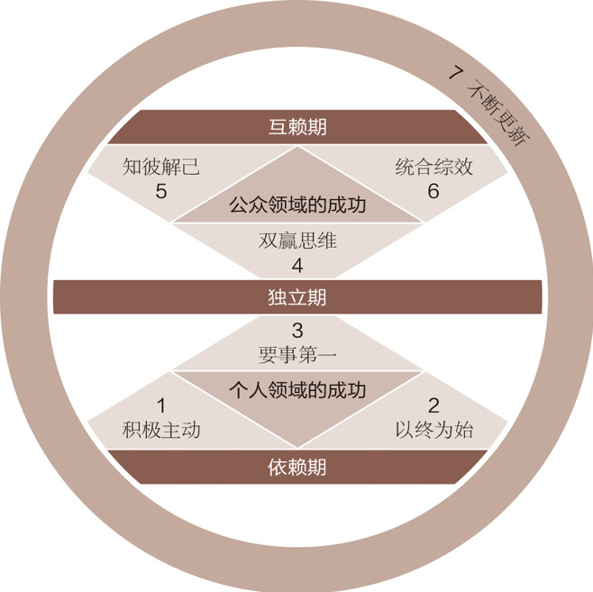
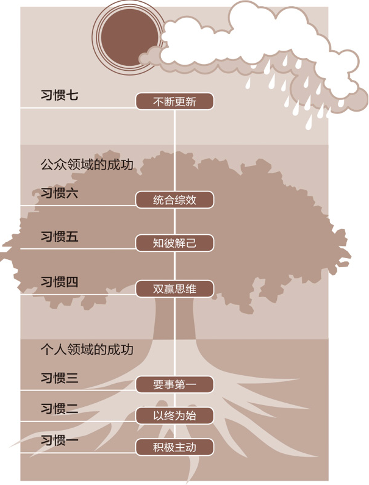
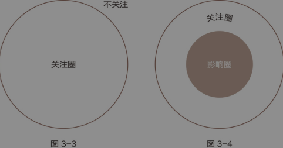
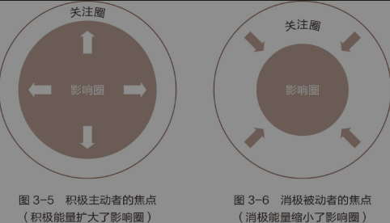
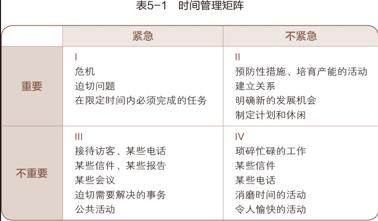
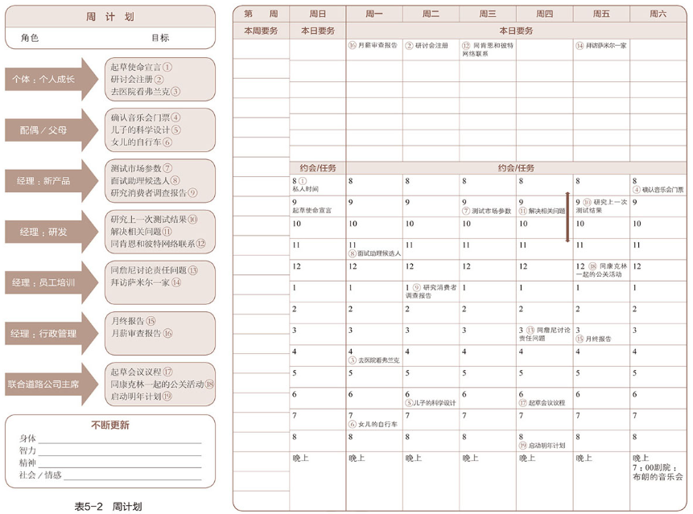
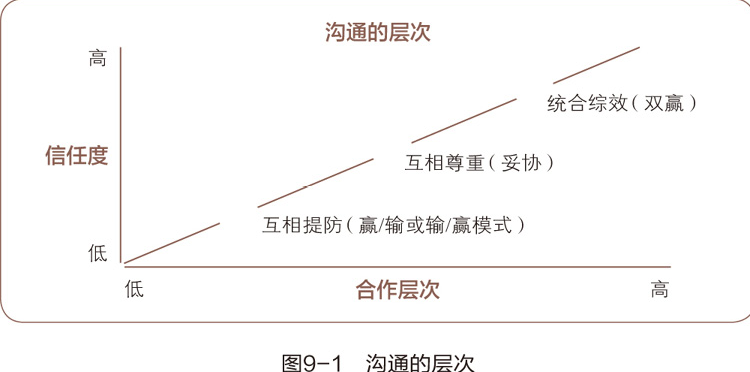
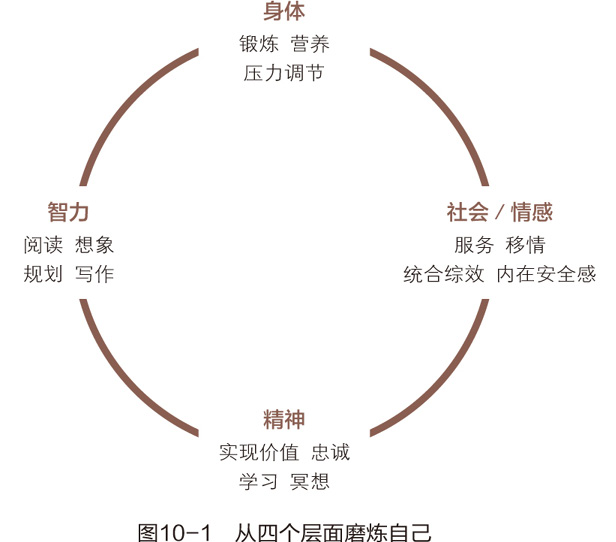

史蒂芬·柯维
592个笔记
作为一名军队长官，我发现无论问题多么复杂，只要坚守“以终为始”的准则，任务一定能取得成功。
本书奠定了其独一无二的地位，我认为有四点原因：1.柯维在一套完整的理论体系中，创造出一种“用户界面”，形成连贯的概念架构，加上柯维的文采，让内容变得易读可行。2.柯维的重点是跨越时代的亘古不变的法则，而不仅仅是一些技巧或是时下流行的理论。3.柯维首先写的是“塑造性格”而不是“获得成功”，因此，不仅要帮助人们变成高效能人士，还要能成为更好的领导者。4.柯维本身是大师级的教师，却十分谦虚，承认自己也有缺点，他立志要和大家分享所学到的知识。
BHAG理念（Big Hairy Audacious Goals，宏伟的、冒险的、大胆的目标）
伟大的领导始于塑造性格，要做一个领导首先你要知道自己是谁，这是你做事的基础。如何塑造领导？你要先塑造自己的个性。《
比尔·盖茨变得与众不同的原因，并不是在适当时候做决定的运气，而是他在适当时候的积极回应。（习惯一：积极主动）
真正的原则意味着我们会把最重要的目标安排在精力充沛的时间，意味着在判断力最佳的状态下做出突破。
盖茨和巴尔默合作时的收获要比单打独斗大得多，1+1绝对大于2。（习惯六：统合综效）
即使在微软创业最紧张的时期，盖茨也会定期抽出一整周阅读和反思，扫清一些障碍，那是思考的一周。
一个简单的问题可以作为衡量伟大领导者的重要变量之一，即，掌权者的内在动力、性格和抱负的真正用意是什么？
我的父亲说，他并不是发明了这些概念，而是他发现了这些普遍受到认可的原则。他的作用是把这些原则都整合成一个人在生活中会用到的习惯。

历史观念演变：第一次世界大战后，社会对成功的认知从“品德”（诚信、谦逊、勇气等内在特质）转向“个人魅力”（外在形象、交际技巧、积极心态）。这种思潮分化为两大方向：
注重表面关系：强调公关技巧与人际操纵；
盲目乐观主义：推崇心灵鸡汤式的积极暗示，忽略现实根基。
反思现代困境：过度追求速成技巧（如“如何快速说服他人”）导致人们忽视品德根基，如同只关注金蛋却饿死下蛋的鹅。作者通过教育儿子的经历发现，真正的成长需回归价值观驱动的内在动机，而非外在控制。
感知实验的启示：
条件作用的影响：长期环境塑造使人们形成固化认知（如对同一图片的不同解读）；
主观性的局限：我们总认为自己的观点“客观”，实则受立场限制，需承认他人视角的合理性；
思维转换的价值：顿悟式的视角转变（如从“老妇人”到“少女”的视觉切换）能彻底改变对问题的理解，甚至重构人际关系。
思维定式的危害：若只改变行为而不调整思维方式（如强迫孩子服从却不理解其需求），效果短暂且易引发反抗，因“言行”与“本质”的割裂难以持久。
自然法则的不可违抗：原则如同物理定律（如万有引力），是客观存在的效能基础。例如：
耕种隐喻：春天播种、夏日耕耘、秋日收获的自然周期，无法通过技巧压缩；
人际信任：真正的合作基于品德而非能言善辩，正如威廉姆·乔治·乔登所言：“人性反映真实自我，无法伪装。”
原则的普遍适用性：无论是家庭、职场还是社会，原则（如尊重、诚信）都是高效能的通用语言。个人需将原则内化为习惯，而非依赖情境化的技巧。
治标不治本的陷阱：试图通过外部激励（如奖励、惩罚）改变他人，往往忽略内在动机的培养。典型案例：
企业管理：若员工缺乏责任感，仅靠制度约束或口号培训无法根治问题；
亲子关系：强制孩子分享却未让其体验“拥有”的满足感，会导致抗拒或虚假服从。
自我反省的突破口：作者通过女儿不愿分享玩具的冲突，意识到自身期望过高与情感不成熟的问题，进而转向理解与耐心，最终促成女儿自发分享。印证了“拥有→付出”的心理发展规律。
三维度定义习惯：
知识（为何做）：理解行动的意义（如早睡有益健康）；
技巧（如何做）：掌握实践方法（如制定作息表）；
意愿（想要做）：内在驱动力（如追求精力充沛的状态）。
螺旋式成长模型：习惯改变需经历“认知→行动→内化→新认知”的循环。例如，从依赖他人监督到自主管理时间，需反复调整目标和策略。
依赖期：以“你”为中心，典型表现为：
情感依赖：价值感来自他人认可；
智力依赖：遇事求助而非主动思考。
独立期：以“我”为中心，标志为：
自我负责：不抱怨环境，专注可控因素；
目标导向：清晰个人使命并为之行动。
互赖期：以“我们”为中心，特征包括：
协作增效：承认个人局限性，善用团队智慧；
情感成熟：既保持自我价值感，又能共情他人需求。
常见误区：误将“独立”视为终点（如标榜“自我独立”却孤立他人），实则互赖才是高效能的核心。
经典隐喻解析：
金蛋（产出）：短期成果（如季度利润、整洁的房间）；
鹅（产能）：持续产出的能力（如员工士气、亲子信任）。
失衡的代价：
重产出：压榨员工导致离职率上升；强迫孩子服从破坏自主性；
重产能：过度培训忽视业绩，或溺爱孩子而不立规矩。
实践平衡的艺术：
职场应用：平衡业绩目标与员工福祉（如谷歌20%自由工作时间）；
家庭教育：在学业成绩（产出）与学习兴趣（产能）间找到支点。
个人成功的基础（习惯一至三）：
习惯一“积极主动”：回应刺激前的选择自由（如面对批评时选择理解而非反击）；
习惯二“以终为始”：以人生使命为指导决策（如撰写个人宪法）；
习惯三“要事第一”：区分“紧迫”与“重要”（如用时间矩阵管理日程）。
公众成功的进阶（习惯四至六）：
习惯四“双赢思维”：超越零和博弈（如谈判中寻求共同利益点）；
习惯五“知彼解己”：同理心倾听（如用“复述+情感反馈”代替建议）；
习惯六“统合综效”：创造性合作（如脑暴中融合对立观点）。
持续更新的保障（习惯七）：
身体、精神、智力、情感四维度：定期锻炼、冥想、阅读、维护关系。

消极循环模式：
习惯四“你输我赢”：竞争思维侵蚀信任（如职场抢功）；
习惯五“先谈论后倾听”：主观臆断引发误解（如夫妻争吵中各执己见）。
系统化改进：对照高效能习惯，识别自身短板（如从“要事最后”调整为“周计划复盘”）。
职场团队管理：通过习惯四（双赢）与习惯六（统合综效）建立协作文化，如用“利益矩阵”分析各方需求，寻找超预期解决方案；
家庭沟通优化：结合习惯五（知彼解己）与习惯七（更新），定期举行家庭会议，倾听成员感受并共同规划休闲活动；
个人突破案例：从依赖期（抱怨上司不公）→独立期（主动提升技能）→互赖期（与上司协商职责边界），体现习惯一至三的递进应用。
主动创造与被动反应：
基因/心理/环境决定论的局限：三种决定论（基因、心理、环境）将人视为“刺激-回应”的机械体，但维克多·弗兰克尔在纳粹集中营的经历证明，人类拥有在刺激与回应之间选择自由的能力。这种自由是人与动物的根本区别。
四项人类天赋：
自我意识：反思自身思维的能力（如觉察到“我正在生气”）；
想象力：超越现实构建愿景（如规划未来职业）；
良知：判断是非的道德指南（如拒绝不诚信交易）；
独立意志：不受外界胁迫的决策力（如坚持原则拒绝贿赂）。
社会之镜的扭曲映射：
外界常通过三种标签定义我们：
基因决定论：“你天生不适合做领导”；
心理决定论：“你的性格缺陷源于童年创伤”；
环境决定论：“你失败是因为经济不景气”。
消极影响：接受这些标签会使人放弃责任，陷入“受害者心态”（如“我无法改变现状”）。
语言暴露思维模式：
消极语言：“我只能这样做” → 推卸责任；
积极语言：“我选择这样做” → 主动担责；
案例：将“我不得不加班”转换为“我选择加班以保证项目质量”，重塑对工作的掌控感。

定义与差异：
关注圈：所有关心的事物（如国际局势、他人评价）；
影响圈：能实际掌控的事物（如个人技能、时间管理）。
消极被动者：聚焦关注圈，抱怨不可控因素（如“老板偏心”）；
积极主动者：专注影响圈，提升可控能力（如通过高效沟通改善上下级关系）。
扩大影响圈的策略：
直接控制问题（与自身行为相关）：
通过习惯一至三（主动、以终为始、要事第一）重塑行为，如制定健康计划并执行。
间接控制问题（与他人行为相关）：
用同理心影响他人，如通过倾听与示范而非说教改变团队拖延习惯。
无法控制问题（如自然灾害）：
调整心态，如面对疫情时专注防护措施而非恐慌。

30天试验计划：
步骤：
语言重构：将“如果”改为“我可以”（如“如果同事配合→我可以主动协调”）；
承诺微行动：每天完成一件小事（如提前5分钟到岗），强化诚信力；
反思日志：记录关注圈与影响圈的精力分配，逐步优化。
案例：一位员工通过主动分析上司需求（而不仅是完成任务），将影响圈从“执行者”扩展到“决策参谋”，最终获得晋升。
错误应对与成长型思维：
积极复盘：将错误视为“产出/产能失衡”的结果（如因过度追求业绩忽视团队建设），而非自我否定；
坚毅（Grit）培养：安杰拉·达克沃思的研究表明，长期承诺（如每日阅读30分钟）比短期激情更能塑造成功。
“手杖理论”：
自由选择与责任承担如同手杖两端，不可分割。例如：
选择熬夜追剧 → 承担次日效率低下的后果；
选择拖延沟通 → 承担项目延误的风险。
应用：在团队管理中，赋予成员选择权的同时明确责任边界。
“由内而外”的突破：
个人层面：先修正自身态度（如停止抱怨同事），再寻求外部改变；
组织层面：企业文化转型需从领导者价值观重塑开始（如谷歌“不作恶”原则的渗透）。
弗兰克尔的“意义疗法”：
集中营幸存者通过赋予痛苦意义（如“为家人活下去”）保持心智自由，印证“选择的自由”超越物理束缚。
塞缪尔·约翰逊的“内在满意论”：
幸福源于内在价值观的践行（如诚信待人），而非外在条件（如财富积累）。
现代管理学的印证：
丹尼尔·平克《驱动力》提出“自主、专精、目的”三要素，与“积极主动”的自我驱动理念高度契合。
消极被动的表现：
归因偏差：将失败归咎于原生家庭或经济环境；
情感依赖：等待他人给予安全感（如“没人爱我，所以我不幸福”）；
语言固化：高频使用“不得不”“没办法”等推责词汇。
突破路径：
通过“影响圈清单”每日记录可控行动，逐步建立自我效能感。
“以终为始”的本质：
在行动前先明确目标，如同建筑师绘制蓝图后才施工。这一原则要求以人生终极目标为基准，衡量所有决策的价值。例如：
个人层面：临终前希望被铭记为“慈爱的父母”而非“职场精英”，则日常应优先陪伴家人；
企业层面：若愿景是“成为环保先锋”，则产品设计需放弃高利润但污染环境的方案。
两次创造理论：
第一次创造（Mental Creation）：在头脑中构思目标（如创业者规划公司使命）；
第二次创造（Physical Creation）：通过行动实现目标（如组建团队、开发产品）。
失衡风险：跳过第一次创造直接行动（如盲目跟风创业），易导致资源浪费与方向迷失。
领导（Leadership）：
做正确的事——确定梯子是否靠在正确的墙上。
核心任务：制定愿景、价值观与战略方向（如马云提出“让天下没有难做的生意”）。
管理（Management）：
正确地做事——确保高效攀爬梯子。
核心任务：优化流程、分配资源、监督执行（如KPI考核、供应链优化）。
现实困境：
多数人沉迷管理细节（如处理邮件、开会），却忽视领导职责（如思考行业趋势）。
案例：柯达发明数码相机后仍聚焦胶片管理，最终因战略领导失败而破产。
撰写意义：
将模糊的价值观转化为具体行动纲领，成为决策的“内在裁判”。例如：
使命范例：“通过专业能力帮助弱势群体获得公平教育机会”。
决策检验：面对高薪跳槽机会时，自问“这与我的教育公平使命是否一致？”
撰写方法：
影响圈核心挖掘：
从安全感、智慧、力量、方向四维度自我剖析（如通过冥想或日记反思深层需求）。
全脑协作法：
左脑：逻辑化梳理目标（列表、关键词）；
右脑：图像化愿景（愿景板、思维导图）。
动态修订：
每年定期回顾（如生日时），根据人生阶段调整（如从“拼搏事业”转向“平衡家庭”）。
常见低效中心及后果：
| 生活中心 | 行为特征 | 潜在危机 |
|---|---|---|
| 配偶 | 过度依赖伴侣情感反馈 | 对方态度变化易引发自我价值崩塌 |
| 家庭 | 以家族传统为绝对准则 | 抗拒变革，难以应对时代冲击 |
| 金钱 | 以收入定义自我成就 | 经济波动导致焦虑，人际关系功利化 |
| 工作 | 身份认同仅来自职位 | 退休或失业后陷入存在主义危机 |
原则为中心的优势：
以普世原则（诚信、尊重、贡献）为锚点，兼具稳定性与灵活性。
案例：面临裁员时，原则导向者会：“评估自身能力是否符合市场需求（诚实），规划技能升级（成长），而非仅抱怨公司不公。”
五要素确认法：
针对目标场景设计包含以下要素的内心彩排：
个人化：“我（而非他人）将主导沟通”；
积极性：“用倾听代替指责”；
果断性：“在30秒内清晰表达需求”；
可视化：想象对方点头回应的细节；
情感联结：体会达成共识后的成就感。
应用场景：
关键谈判：提前模拟对方反对意见及应对策略；
亲子冲突：预演情绪失控前深呼吸并转换语气。
角色清单法：
列出所有重要角色（如家长、导师、志愿者），并为每个角色设定季度目标：
示例：
职业人：完成A项目，提升团队协作效率；
家长：每周3次家庭晚餐，手机禁用；
自我健康：每日晨跑3公里。
失衡警示信号：
身体：长期疲劳、失眠；
情绪：易怒、冷漠；
关系：家人抱怨“你总是缺席”。
家庭宪法制定步骤：
全员讨论：召开家庭会议，让每个成员表达心中“理想家庭”的样子；
共识提炼：汇总关键词（如“信任”“共担责任”）；
行为公约：将价值观转化为具体行动（如“每月一次户外活动日”）。
案例：某家庭将“错误是学习机会”写入宣言，孩子考试失利后家长优先探讨改进而非责骂。
企业使命落地关键：
参与式制定：一线员工参与使命讨论（如丰田“提案制度”）；
持续强化：将使命融入考核（如Patagonia将环保指标纳入部门KPI）。
98%妥协陷阱：
短期让步（如为业绩隐瞒产品缺陷）导致原则侵蚀。
破解：设定“零妥协红线”（如食品企业绝不用有害添加剂）。
空话宣言诊断：
若员工无法用自己的话复述企业使命，则说明宣贯失败。
改进：通过故事化传播（如星巴克用“第三个家”替代“客户满意”口号）。
一周内完成：
撰写个人使命宣言初稿（哪怕仅一句话）；
选择1个角色进行心灵演练（如“明日晨会发言”）；
识别并调整1个生活中心偏差（如减少刷社交媒体，增加专业阅读）。
提示：允许使命宣言不完美，核心是启动“以终为始”的思维肌肉记忆。
自律与独立意志：
习惯三是对习惯一（主动创造）与习惯二（以终为始）的实践，要求通过独立意志（选择与行动力）将价值观转化为行动。
案例：即使疲惫时仍坚持健身计划，体现对健康目标的忠诚。
四代时间管理演进：
| 代际 | 核心思想 | 局限 |
|---|---|---|
| 第一代 | 备忘录与清单 | 无优先级，被动应对 |
| 第二代 | 计划与日程表 | 机械化，忽视人性化需求 |
| 第三代 | 目标与优先级 | 易陷入“紧急事务”陷阱 |
| 第四代 | 个人管理（产出/产能平衡） | 需结合原则与使命感 |

四象限解析：
| 紧急 | 不紧急 |
|---|---|
| 重要 （第一象限：危机、DDL） | 重要 （第二象限：规划、关系维护） |
| 不重要 （第四象限：琐事、娱乐） | 不重要 （第三象限：无效社交、临时会议） |
高效能策略：
减少第一象限：通过预防（如定期设备维护）降低危机发生频率；
投资第二象限：每天固定时间做长期重要事务（如阅读、战略思考）；
拒绝第三、四象限：对无关请求说“不”（如拒接推销电话）。
帕雷托原则应用：
将80%精力投入20%能带来长期价值的事务（如客户关系维护而非重复性行政工作）。
六大标准：
和谐一致：目标与使命宣言对齐（如家庭时间写入周计划）；
角色平衡：每周为不同角色（家长、职业人、自我）设定目标；
灵活调整：预留空白时间应对突发情况；
以人为本：优先处理人际需求（如临时调整会议安抚情绪崩溃的同事）；
全脑协作：结合逻辑（左脑制定计划）与直觉（右脑评估感受）；
可视便携：使用数字工具（如Notion周视图）随时同步进度。
周计划四步骤：
确认角色：列出核心角色（如“项目经理”“健身者”）；
设定目标：每角色1-2个关键结果（如“完成项目原型设计”“跑步3次”）；
安排时间：为第二象限事务预留固定时段（如周一上午战略会议）；
每日调整：根据突发事件动态优化（如推迟会议以处理客户投诉）。

指令型 vs 责任型授权：
| 类型 | 特点 | 风险 | 适用场景 |
|---|---|---|---|
| 指令型 | 详细指导方法，紧盯过程 | 抑制创造力，依赖监督 | 新手员工或标准化任务 |
| 责任型 | 明确结果与边界，给予自主权 | 需前期培训与信任建立 | 成熟团队或创新项目 |
责任型授权五要素：
预期成果：明确“做什么”（如“本月客户满意度提升至90%”）；
指导方针：划定边界（如“预算不超过10万，合规优先”）；
可用资源：提供支持（如开放数据库权限、安排导师）；
责任归属：设定评估节点（如每周五提交进度报告）；
后果明确：挂钩奖惩（如达标后奖金、未完成则复盘改进）。
成熟度适配：
对经验不足者增加指导（如每日站会），对资深者放手（如季度目标制）。
“忙碌陷阱”：
用战术勤奋掩盖战略懒惰（如每天加班却无成果）。
破解：每日自问“今日所做是否对三年后的目标有意义？”
“紧急成瘾”：
沉迷处理危机获得短期成就感。
破解：设置“第二象限保护时间”（如每周二上午不接电话）。
“过度授权”：
放任自由导致失控。
破解：初期通过里程碑检查（如原型阶段验收）逐步建立信任。
定义：
人际关系中的信任积累如同银行账户，需通过持续“存款”（积极行为）维系，“取款”（伤害行为）过度将导致关系破裂。
存款行为：
理解个体差异：
针对对方需求行动（如A需要赞美，B需要独处时间）；
小节即大事：
守时、记住生日、主动递纸巾等细节传递尊重；
信守承诺：
如父母承诺孩子周末出游，即使加班也需调整兑现；
维护不在场者：
不在背后议论同事，即使面对抱怨也保持中立。
取款行为：
主观臆断：
“我以为你喜欢”式付出（如送书给不爱阅读的朋友）；
违背承诺：
频繁取消约定消耗信任；
公开批评：
在团队面前指责下属而非私下沟通。
理解他人：
方法：主动倾听（如“你似乎对这次晋升失望，愿意聊聊吗？”）；
案例：妻子抱怨工作压力时，丈夫暂停手机游戏专注倾听。
注意小节：
反面教材：开会时回消息暗示对方不重要；
正面示范：记住同事咖啡偏好并偶尔带一杯。
信守承诺：
修复：若无法兑现，提前解释并补偿（如改期后赠送书籍致歉）。
明确期望：
团队应用：项目启动时书面确认分工与截止日期；
家庭场景：与伴侣约定“吵架不过夜”规则。
正直诚信：
挑战：当众承认错误（如领导为错误数据道歉）；
收益：增强团队心理安全感。
勇于致歉：
有效道歉：具体化错误+补偿行动（如“昨天打断你说话是我不对，今天会议你主导”）；
避免：“如果让你不舒服，我道歉”式敷衍。
无条件的爱：
亲子关系：批评行为而非人格（如“撒谎不对”而非“你是骗子”）；
领导力：支持犯错员工成长而非放弃。
消极 vs 积极视角：
传统思维：冲突是信任损耗；
高效能思维：冲突是深化关系的契机（如通过解决分歧更理解对方需求）。
解决步骤：
暂停对抗：约定冷静期（如“半小时后继续讨论”）；
共情倾听：复述对方观点（如“你担心这个方案影响质量对吗？”）；
表达需求：用“我”陈述（如“我需要更多数据支持决策”）；
共创方案：头脑风暴双赢解（如调整截止日期换取更高质量输出）。
独立到互赖的路径：
先成就自我（习惯一至三），再通过习惯四至六（双赢、知彼解己、统合综效）构建健康依赖。
警惕虚假互赖：
讨好型人格（过度取款）或控制欲（拒绝存款）将导致关系失衡。
长期维护：
定期“关系审计”（如季度家庭会议检视情感账户状态）。
案例：项目经理在赶工（第一象限）时接到团队成员倾诉压力（第二象限人际关系），选择暂停工作倾听20分钟，避免长期士气下降（产能维护）。
原则：在紧迫任务中为重要关系留出弹性空间，实现产出与产能的平衡。
（基于原文的深度梳理与逻辑重构）
基本定义：
双赢思维将生活视为合作舞台而非角斗场，强调资源充足性：他人之得≠自己之失。
本质是相互依赖环境下的唯一可持续模式，非双赢即两败俱伤（长期视角）。
传统思维陷阱：
竞争文化：家庭、教育、职场中普遍存在“赢/输”模式（如正态分布曲线、绩效排名）。
后果：破坏关系、抑制潜能、牺牲长期利益（如企业压榨供应商导致恶性循环）。
| 模式 | 特征 | 适用场景与风险 |
|---|---|---|
| 双赢 | 利己利他，资源充足 | 长期关系的唯一选择（如家庭、商业合作） |
| 赢/输 | 竞争思维，损人利己 | 短期效率高，但破坏信任（如零和博弈的绩效考核） |
| 输/赢 | 妥协退让，压抑自我 | 表面和谐，积累怨恨（如过度迁就的亲子关系） |
| 两败俱伤 | 固执对抗，玉石俱焚 | 情绪主导的极端情境（如离婚财产争夺、商业恶性竞争） |
| 独善其身 | 无关利益时选择独立 | 低风险低回报场景（如陌生人关系、无关紧要的决策） |
关键结论：
模式选择需灵活应变，但长期依赖关系中双赢是唯一出路。
“不能双赢就好聚好散”原则：
适用场景：短期业务合作、家庭决策僵局（如电影选择分歧）。
例外：持续性关系（如家族企业）需提前约定退出机制。
双赢品德（内在根基）
诚信：坚守价值观，言行一致（如拒绝虚假承诺）。
成熟：平衡勇气（表达需求）与体谅（理解他人），避免软弱或强硬极端。
知足心态：
匮乏心态：认为成功有限，嫉妒他人成就（如职场恶性竞争）。
富足心态：相信资源充足，合作创造增量（如分享商机）。
双赢关系（情感账户储蓄）
信任基础：通过情感投入（如倾听、尊重）建立高信用关系。
冲突解决：聚焦问题而非立场差异（如谈判中区分“利益”与“要求”）。
双赢协议（明确规则）
五要素模板：
| 要素 | 内容示例 |
|---|---|
| 预期结果 | 销售额提升20%（6个月内） |
| 指导方针 | 合规操作，禁止价格战 |
| 可用资源 | 预算50万，技术支持团队3人 |
| 任务考核 | 月度KPI：客户满意度≥90% |
| 奖惩制度 | 达标奖励10%分红，未达标复盘调整 |
自主权：协议需赋予执行者方法选择权（如德鲁克的“给经理的信”）。
双赢体系（制度保障）
机制设计：薪酬、培训、信息等系统需与双赢目标一致（如协作奖励代替个人排名）。
案例：某公司通过共享基础设施（如电缆铺设）降低多方成本，实现行业共赢。
双赢过程（四步法）
步骤：
换位思考（如用“同理心倾听”理解供应商成本压力）。
识别核心问题（如“交付延迟”背后是产能不足）。
定义共同目标（如保证质量前提下缩短周期）。
探索创新方案（如联合投资新生产线分摊风险）。
商业场景：
软件公司案例：退还定金放弃合约，维护客户关系，最终获得长期合作机会。
博弈论研究：斯坦福1200万次模拟证明合作策略利润远超竞争（如重复博弈中的信任积累）。
家庭应用：
冲突解决：放弃看电影改做共同活动，避免“有人欢喜有人愁”。
教育启示：避免用比较（如成绩排名）定义孩子价值，培养富足心态。
管理哲学：
体系＞个人：糟糕制度会扼杀善意（如鼓励竞争却要求合作的KPI）。
自我评估：高信任环境下，自我监督比外部考核更有效（如清理庭院的孩子自主检查）。
个人层面：通过成熟人格（勇气+体谅）实现自我价值与社会价值的统一。
组织层面：构建协同文化释放集体潜能（如“产出/产能平衡”的金鹅寓言）。
社会层面：推动从对抗到共生的文明演进（如法律体系从胜负争夺到公平协商）。
行动建议：
从习惯一（主动积极）开始，识别可应用双赢的当前关系。
在下次冲突中尝试四步法，记录过程与结果差异。
定期复盘：我的决策是否在创造增量价值，还是陷入零和博弈？
（基于原文的深度梳理与逻辑重构）
核心定义：
知彼解己的本质是“先诊断后开方”，即通过移情聆听（Empathic Listening）建立深层理解，再寻求被理解。
反常识洞察：影响力不源于技巧，而基于可信赖的人格（品德一致）+ 情感账户储蓄。
传统沟通陷阱：
自传式回应的四种模式：
| 类型 | 表现 | 后果 |
|---|---|---|
| 价值判断 | 立即评价对错（如“你这样不对”） | 抑制表达欲望 |
| 追根究底 | 以自我价值观追问隐私 | 破坏信任，引发防御 |
| 好为人师 | 未经请求直接建议（如“你应该…”） | 忽视真实需求 |
| 自以为是 | 用自身经验解读他人动机 | 误解加深，关系疏离 |
数据佐证：亲子关系调查显示，80%的冲突源于父母过早的价值判断与说教。
| 阶段 | 关键行为 | 脑区参与 | 案例场景 |
|---|---|---|---|
| 1 | 机械复述原话 | 左脑（语言） | 员工抱怨：“项目压力太大。”回应：“你说项目压力大。” |
| 2 | 用自己语言解释内容 | 左脑（逻辑） | “你感觉任务量超出承受范围？” |
| 3 | 识别并反馈情绪 | 右脑（情感） | “你对此感到焦虑和无助。” |
| 4 | 整合事实与情感深度共鸣 | 全脑协同 | “高强度交付让你身心俱疲，担心影响团队信任，对吗？” |
实践要点：
风险与准备：移情聆听需情感暴露（如接受被对方观点影响），依赖习惯一、二、三建立的内在安全感。
适用边界：
关键场景：情绪冲突（如夫妻争吵）、信任危机（如员工离职谈话）。
慎用场景：紧急决策（需快速响应）、低信任关系（先储蓄情感账户）。
理解他人（知彼）：
心理空气理论：提供无评判的倾听环境，如同呼吸必需空气（案例：孩子哭闹时拥抱沉默优于说教）。
3F模型：
Fact（事实）：剥离主观判断的客观描述（如“本周迟到3次”而非“你总不守时”）。
Feeling（感受）：识别情绪信号（如“听得出你对考核结果失望”）。
Focus（意图）：挖掘深层需求（如“你希望获得更公平的发展机会”）。
表达自我（解己）：
古希腊沟通三要素：
| 要素 | 内涵 | 实践示例 |
|---|---|---|
| 品德 | 可信度（如专业积累、言行一致） | 医生建议前展示专业资质与成功案例 |
| 感情 | 共情联结（如“我理解您的顾虑”） | 销售：“我明白价格超出您的预算。” |
| 理性 | 逻辑说服（如数据、方案对比） | 用ROI分析证明投资必要性 |
勇气与体谅平衡：
过度体谅：压抑需求（如不提加薪导致 resentment）。
过度勇气：强硬表达（如“必须按我的方案做”引发对抗）。
权力关系中的沟通：
权力悖论：领导者获得影响力后易失去倾听能力（达彻尔·凯尔特纳研究）。
自测指标：会议中个人发言占比≤30%（6人会议中发言时间＜20%）。
数字化沟通的局限：
信息损耗：文字缺失93%的情绪信号（7%语言+38%语调+55%肢体，Mehrabian定律）。
应对策略：
高冲突场景强制面谈或通话（如绩效反馈、合同谈判）。
使用语音消息补充语调信息（优于纯文字）。
家庭关系中的预防性沟通：
预演机制：模拟冲突场景训练倾听（如婆媳育儿分歧角色扮演）。
长期效益：情感账户充足可使70%潜在矛盾自然消解（婚姻研究数据）。
七日倾听挑战：
行动：每天选择1次对话延迟回应10秒，专注理解对方。
记录：
| 日期 | 对话对象 | 原想回应方式 | 实际倾听行动 | 结果差异 |
|---|
沟通健康度评估：
红灯指标：频繁打断、预设结论、身体后仰/看手机。
绿灯指标：点头确认、重复关键词、开放姿态。
领导者倾听审计：
问题清单：
我最近一次改变主意是因为员工的建议吗？
团队中沉默者是否主动向我表达观点？
我的提问中“为什么”与“如何”的比例是多少？（理想1:3）
依赖路径：
习惯1-3（主动积极→以终为始→要事第一） → 建立内在安全感 → 习惯5（知彼解己） → 实现习惯4（双赢）与习惯6（统合综效）。
反向验证：无法移情聆听常源于：
自我价值感不足（习惯1缺失→防御性倾听）。
目标模糊（习惯2缺失→对话偏离核心）。
时间焦虑（习惯3缺失→急于打断对方）。
终极价值：
个体：超越“说服”达成“共鸣”，从交易型关系升级为共生型伙伴。
组织：破解“集体沉默”（如安然事件），构建心理安全文化。
文明：在分裂加剧的时代重建“理解优先于批判”的对话伦理。
（基于原文的深度梳理与逻辑重构）
核心定义：
统合综效（Synergy）：通过尊重差异和创造性合作，实现1+1＞8的质变效应，其本质是“整体大于部分之和”的协同哲学。
反常识洞察：与意见相同者交流价值有限，分歧才是创新催化剂（如谷歌创始人拉里·佩奇与谢尔盖·布林的持续辩论）。
与传统思维对比：
| 传统模式 | 统合综效模式 |
|---|---|
| 非此即彼的二元对立 | 寻找第三条道路（超越对立） |
| 防御性沟通（低信任） | 开放式共创（高信任） |
| 追求相同（克隆思维） | 尊重差异（互补性优势） |
| 层次 | 信任度 | 特征 | 结果 | 案例场景 |
|---|---|---|---|---|
| 低层次 | ＜30% | 互相提防，依赖法律条款 | 赢/输或两败俱伤 | 商业合同纠纷中的诉讼威胁 |
| 中间层 | 50%-70% | 表面礼貌，回避冲突 | 妥协式合作（1+1=1.5） | 团队会议中“沉默的大多数”现象 |
| 统合综效 | ＞90% | 全开放交流，创造性碰撞 | 突破性方案（1+1≥8） | 跨部门脑暴会诞生颠覆性产品创意 |

关键要素：
信任基础：依赖习惯四（双赢）、习惯五（知彼解己）的长期积累。
文化标志：允许“混乱边缘”的创新（如教学实验中师生共同设计课程）。
寻找第三条道路：
步骤模型：
定义问题：明确核心矛盾（如家庭时间分配冲突）。
深度聆听：用习惯五理解各方立场（如妻子需要陪伴 vs 丈夫工作压力）。
头脑风暴：跳出非此即彼框架（如“周末短途旅行+远程办公”混合方案）。
原型测试：小范围验证可行性（如试行一个月后复盘调整）。
案例：某公司取消部门汇报会，改用匿名提案集册，引导管理者从辩护转向共创。
尊重差异的四大维度：
| 差异类型 | 价值 | 冲突转化策略 |
|---|---|---|
| 认知 | 多元视角补全盲区（如左脑/右脑思维） | 用“3F模型”剥离事实与观点 |
| 经验 | 跨界借鉴激发灵感（如医疗与工程结合） | 举办跨行业创新工作坊 |
| 情绪 | 情感信号揭示深层需求 | 情绪日记记录+每周家庭情绪复盘会 |
| 价值观 | 锚定共同目标超越分歧 | 制定团队/家庭宪章（如使命宣言） |
化阻力为动力的三阶模型：
识别阻力源：
消极因素：恐惧变化、自我防卫、惯性思维（如“我们一直这么做的”）。
积极动力：成长渴望、利益共享、意义感驱动。
转化策略：
安全环境：允许表达顾虑（如匿名意见箱）。
参与式决策：让反对者主导部分方案（如任命质疑者为试点项目负责人）。
快速反馈：小步迭代验证有效性（如敏捷开发中的两周冲刺）。
个人统合综效修炼：
内在整合：平衡理性与感性（如用“决策平衡单”量化情感因素）。
外在突破：定期进行“差异社交”（如参加陌生领域沙龙、跨界读书会）。
五步标准化流程：
| 步骤 | 核心行动 | 工具/方法 |
|---|---|---|
| 1 | 定义问题/机会（共识基础） | 5W2H分析法 |
| 2 | 理解他人方案（移情聆听） | 倾听四阶段模型（复述→解释→共情→整合） |
| 3 | 表达自我需求（勇气+体谅） | 非暴力沟通四要素（观察-感受-需求-请求） |
| 4 | 脑暴所有可能性（禁止批判） | 六顶思考帽法 |
| 5 | 选择最优解并行动（快速验证） | PDCA循环（计划-执行-检查-调整） |
家庭关系：
案例：子女教育分歧（学业优先 vs 兴趣培养）→ 共创“项目制学习计划”（如用游戏设计学数学）。
红线预警：过早动用权威压制（如“我是家长听我的”）将永久破坏协同可能。
组织创新：
谷歌模式：允许20%时间自由研发（Gmail、AdSense均源于此）。
日本企业启示：终身雇佣制下的深度参与文化（如丰田“改善提案”系统）。
社会协作：
法律局限：诉讼作为最后手段（如离婚协议优先调解）。
科技伦理：AI开发中工程师与哲学家的统合综效（如自动驾驶伦理框架设计）。
神经科学基础：
镜像神经元激活→促进同理心与协作意愿。
多巴胺释放→创新突破带来的集体愉悦感。
生态学隐喻：
自然界的共生关系（如珊瑚与虫黄藻）→ 人类社会的跨域协作。
文明意义：
对抗分裂：在意识形态对立中寻找共同人性基础（如曼德拉的种族和解）。
创新引擎：从个人天才到集体智慧的范式迁移（如开源软件运动）。
行动启示：
每日一问：“今天我与谁的差异对话可能催生新价值？”
团队实验：每月举办“疯狂想法日”（No Idea is Bad Idea）。
家庭实践：用“第三选择”解决一次日常冲突（如家务分工僵局）。
（基于原文的深度梳理与逻辑重构）
投资逻辑：
自我作为生产工具：个人效能=能力（身体、智力）× 能量（精神、情感）。
经济安全悖论：财富≠安全感，创造财富的能力（如学习力、适应力）才是根本。
四维度更新模型：

| 维度 | 核心目标 | 更新方式（第二象限事务） |
|---|---|---|
| 身体 | 提升能量储备与抗压能力 | 有氧运动（每周3次）+ 伸展训练（每日） |
| 精神 | 锚定人生方向与意义感 | 冥想/祷告（晨间15分钟）+ 经典阅读 |
| 智力 | 保持思维敏捷与创新力 | 主题阅读（月1本书）+ 写作复盘（周记） |
| 社会/情感 | 构建高质量人际关系网络 | 深度对话（每周1次）+ 情感账户储蓄 |
关键原则：
平衡性：任一维度短板将引发连锁反应（如长期熬夜损害身体→情绪暴躁破坏关系）。
螺旋上升：微小但持续的改进（1%法则）优于间歇性高强度投入。
身体层面——打造生理韧性
科学运动框架：
| 阶段 | 内容 | 生理价值 |
|---|---|---|
| 预热 | 动态拉伸（5-10分钟） | 提高肌肉温度，预防损伤 |
| 有氧 | 跑步/游泳（30分钟） | 增强心肺功能，释放内啡肽 |
| 力量 | 抗阻训练（20分钟） | 提升基础代谢，延缓衰老 |
| 冷却 | 静态拉伸（10分钟） | 分解乳酸，加速恢复 |
行为心理学技巧：将运动与习惯绑定（如晨跑后听播客）。
精神层面——构建意义操作系统
价值观澄清工具：
墓志铭练习：想象葬礼上他人对你的评价→反推当下行动优先级。
个人宪章：撰写包含使命、愿景、核心原则的宣言（每季度修订）。
案例：某CEO通过每日清晨“感恩日记”重获工作意义感，抑郁症状缓解72%。
智力层面——知识复利增长策略
学习金字塔应用：
| 学习方式 | 两周后留存率 | 实践建议 |
|---|---|---|
| 听讲（被动） | 5% | 转换为输出导向（如做思维导图） |
| 阅读（主动） | 10% | 结合费曼技巧（讲给他人听） |
| 讨论（交互） | 50% | 组建学习小组（周例会） |
| 实践（应用） | 75% | 设计“30天挑战”项目 |
| 教授他人（输出） | 90% | 开设博客/短视频分享 |
社会/情感层面——关系升级路径
情感账户存款公式：
存款额=理解深度×尊重程度×帮助次数/自我中心指数
冲突转化四步法：
暂停反应（刺激与回应间的0.5秒空间）。
移情聆听（复述对方情绪与需求）。
表达自我（用“我句式”陈述感受）。
共创第三选择（脑暴双赢方案）。
正向循环模型：
身体活力↑→思维清晰↑→决策质量↑→关系和谐↑→精神充实↑→身体投入↑
数据支撑：谷歌“亚里士多德计划”显示，高效团队成员的生理-心理-社交健康分高于均值37%。
失衡预警信号：
| 失衡类型 | 身体信号 | 情绪信号 | 关系信号 |
|---|---|---|---|
| 身体透支 | 慢性疲劳、头痛 | 易怒、冷漠 | 回避社交 |
| 精神空虚 | 失眠、食欲紊乱 | 无意义感、抑郁 | 过度依赖他人认可 |
| 智力停滞 | 注意力涣散 | 焦虑新事物 | 话题单一，排斥讨论 |
| 情感枯竭 | 躯体化症状（如胃痛） | 情感麻木 | 沟通机械化，避免冲突 |
修复策略：
紧急制动：单维度72小时深度修复（如周末禅修营）。
系统重置：四维度各选1项微习惯重启（如每日10分钟冥想+步行+阅读+致谢）。
突破原生模式：
消极模式识别：列出家族三代重复的行为模式（如回避冲突）。
转型者宣言：“我将以原则而非惯性回应挑战，成为负向循环的终结者。”
螺旋上升实践：
PDCA循环：
Plan：制定四维度季度目标（如体脂率降至20%）。
Do：执行每日/周行动计划（如晨跑3次/周）。
Check：月末健康数据复盘（体脂、静息心率等）。
Act：调整饮食结构（增加蛋白质摄入）。
家庭更新计划：
共读机制：每月家庭读书会（如共读《高效能人士的七个习惯》）。
传统创新：保留核心仪式（如年夜饭），注入新元素（每人分享年度成长故事）。
（核心观点提炼与体系整合）
个人-关系-组织协同模型：
内在一致性：习惯1-3（主动积极→以终为始→要事第一）构建稳定内核。
外在协同性：习惯4-6（双赢→知彼解己→统合综效）催化关系升级。
持续进化力：习惯7（不断更新）形成增长飞轮。
原则中心型人生：
原则vs个性：原则如引力恒定，个性如轨迹可调（案例：诚信原则下的灵活沟通）。
跨文化普适性：全球30国调研显示，7习惯实践者职业满意度高于均值2.3倍。
自我觉察工具包：
每日三问：
今日我的回应是否基于原则？
哪个习惯应用最成功？
何处可以引入“第三选择”？
周复盘模板：
| 维度 | 成就事件 | 改进点 | 原则关联 |
|---|
组织文化渗透路径：
领导力传导：CEO季度公开信阐释原则实践心得。
制度匹配：绩效考核纳入双赢协议达成率、跨部门协同创新数。
代际影响策略：
家庭原则宪章：共同制定并签署（如“冲突24小时内解决”）。
成长型反馈：用“潜力视角”替代“缺陷视角”（如“你的创意让我惊喜”替代“这行不通”）。
反脆弱性构建：
精神锚点：原则提供危机中的决策依据（如疫情期坚持诚信不裁员）。
能力储备：跨领域学习（T型人才）抵御行业波动。
数字时代挑战：
专注力保卫：践行习惯3（要事第一），用番茄工作法对抗碎片化。
深度关系重建：线下“无手机对话日”修复浅层社交。
行动号召：
从明日起，选择1个维度启动“30天更新挑战”，记录蜕变轨迹。
每月15日设为“原则反思日”，校准人生罗盘。
运用第二象限事务为中心的思维来安排日程，结果是你把大部分时间用于授权、训练、准备主管会议发言、打一通电话、吃一顿收效颇丰的午餐。只要采取重视“产能”的长效手段，再过数周或数月，你可能就不会再被急事缠身了。
在家庭或小企业中，这种授权可能是行不通的。不过，这并不排斥第二象限事务为中心的思维。这种思维仍然能在你的影响圈里独辟蹊径，帮助你想出其他的第二象限事务为中心的办法来减少或减轻第一象限事务的危机。
他教导我们，在生命的长河中，个人或者企业想要保持成功，唯一的方法就是以原则为中心地生活。
领导力就是清晰地指出别人的价值和潜力，使对方受到鼓舞从而有所意识。
来自微信读书